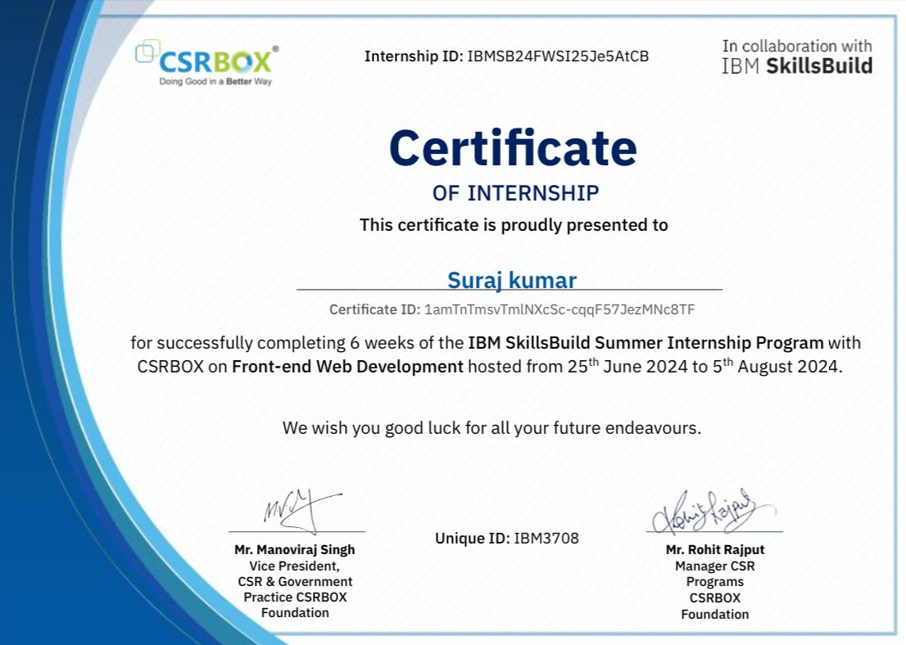
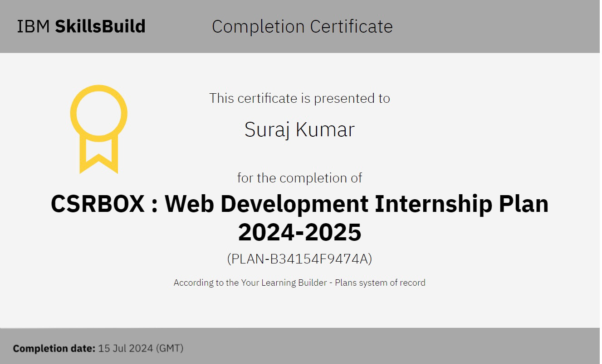
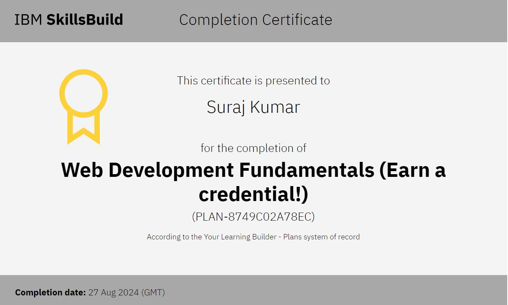

My Projects
Get Interact - Application
Description: During my "State level Hackathon" named Code4Odisha at Siksha 'O' Anushandhan ITER in Bhubaneswar on August 2022. On that event i make a application with my team named 'Get Interact'. It is a communication platform developed primarily for educational purposes. It serves as a versatile tool for students, allowing them to engage in various academic activities, connect with peers, and access resources to enhance their learning experience.
Key Features:
- Problem Sharing
- Project Suggestions
- Buy/Sell/Rent Books and Instruments
- Teacher Feedback
- Privacy Controls
Technologies Used: Java, Thunkable, Canva
- Some Memories:
Play School - Educational Gaming Website
Description: During my internship at IBM, I developed an educational-based gaming website designed to help students learn their subjects through interactive games. This project aimed to make learning more engaging and enjoyable by combining education with gaming.
Key Features:
- Subject-Based Games: Interactive games covering various subjects like math, science, and geography.
- Progress Tracking: Features to track student progress and provide feedback.
- User-Friendly Interface: Intuitive design for easy navigation and an enjoyable user experience.
- Responsive Design: Ensured the website works seamlessly across different devices, including desktops, tablets, and smartphones.
- Leaderboard: A competitive element to motivate students by displaying high scores and achievements.
Technologies Used: HTML, CSS, JavaScript, Canva
Some Website Screenshots:   .png)
.png)
.png)
.png)
Cognifyz Internship
Description: During my internship at Cognifyz, I focused on front-end development, contributing to the creation of responsive and user-friendly web applications. This experience allowed me to enhance my skills in HTML, CSS, and JavaScript, as well as gain proficiency in modern front-end frameworks.
Key Features:
- Web Interface Development: Developed and maintained web interfaces, ensuring they were responsive and visually appealing.
- Collaboration: Worked closely with UX/UI designers to translate design concepts into functional web components.
- Cross-Browser Compatibility: Ensured that all web applications functioned seamlessly across various browsers and devices.
- Code Optimization: Implemented best practices for code optimization and performance improvements.
- Debugging and Testing: Identified and fixed bugs to enhance the overall user experience and reliability of the applications.
Technologies Used: HTML, CSS, Canva
Codsoft Internship
Description: During my internship at Codsoft, I engaged in a comprehensive software development program, gaining hands-on experience in various aspects of the software development lifecycle. This internship provided me with valuable insights into real-world software development practices and allowed me to enhance my technical and collaborative skills.
Key Features:
- Software Development: Contributed to the development of software applications, working on both the front-end and back-end aspects.
- Requirement Analysis: Collaborated with senior developers to gather and analyze requirements, ensuring a clear understanding of project objectives.
- Coding and Implementation: Wrote clean, efficient, and maintainable code using various programming languages and tools.
- Testing and Debugging: Conducted thorough testing and debugging to ensure the reliability and performance of the applications.
- Documentation: Created and maintained documentation for code, processes, and project-related activities.
Technologies Used: Java, Canva
Student helper Application
Description: During my "National level Hackathon" event i make a 'Student helper app' with my team . It is an innovative educational application developed during the Inventron, a Hyderabad Hackathon at MLRIT Hyderabad in January 2023. The project was designed to support college freshmen, teachers, and senior students by creating a platform that simplifies the transition into college life. The application was developed using Java, focusing on providing a user-friendly interface for students to quickly learn about their college campus and environment.
The app aims to bridge the gap between new students and their surroundings by offering a variety of features that enhance the overall college experience. It allows new students to explore campus facilities, understand the college's culture, and connect with their peers and professors. Additionally, the application enables senior students to share or sell their projects, books, and other essential items to help freshmen navigate their new academic environment.
Key Features:
- Campus and Environment Guide: Provides new students with detailed information about the college campus, including maps, facilities, and key locations.
- Senior-Student Marketplace: Enables senior students to list projects, books, and other essential items for sale or sharing with juniors and new students.
Promotes a sense of community by facilitating resource sharing among students. - Teacher Directory: Allows freshmen to view information about all the teachers in their college, including their contact details and office hours.
Helps new students connect with their professors and understand their teaching styles and expectations. - User-Friendly Interface: Designed with simplicity in mind, ensuring easy navigation and accessibility for all users.
Mobile-responsive design to cater to students using various devices. - Community Building: Encourages interaction between new and senior students, fostering a supportive and collaborative college community.
- Interactive Features: The application includes interactive elements that make exploring the campus and learning about college life engaging and fun.
Technologies Used: JAVA, Canva
- Some Memories:
My Portfolio Website
Description: My dynamic portfolio website designed to showcase my skills, projects, and experiences in an elegant and user-friendly manner. This project was created with the intent to provide a visually appealing and fully responsive platform that highlighted my works and allows visitors to connect through integrated social media links with me.
The app aims to bridge the gap between new students and their surroundings by offering a variety of features that enhance the overall college experience. It allows new students to explore campus facilities, understand the college's culture, and connect with their peers and professors. Additionally, the application enables senior students to share or sell their projects, books, and other essential items to help freshmen navigate their new academic environment.
Key Features:
- Dynamic Hero Section: Implemented a slider with animations to create an engaging first impression.
- About Section: A well-structured About section that provides my personal introduction, professional background, and goals.
Includes an image with hover effects and a brief narrative supported by animation. - Portfolio Section: Highlighted key projects with images and detailed descriptions.
- Skills and Projects Display: A detailed Skills section showcasing various technical competencies with iconography and descriptions.
The Projects section presents my previous work with images, descriptions, and links to the project details, organized in a tabular format. - Contact Form: Integrated a user-friendly contact form for visitors to reach out.
- Integrated Social Media Links: Easy access to social media profiles through prominently placed icons in the About section.
Links to Facebook, GitHub, Twitter, and LinkedIn help visitors connect easily. - Visual Enhancements: The use of modern fonts, subtle animations, and a consistent color scheme to enhance visual appeal.
Hover effects and transitions on buttons and images to engage users. - Footer with Contact Information: A clean footer design with quick access to my contact details and additional social media links.
Consistent branding across the website with a custom color scheme and typography.
Technologies Used: HTML, CSS, JavaScript